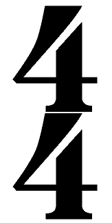
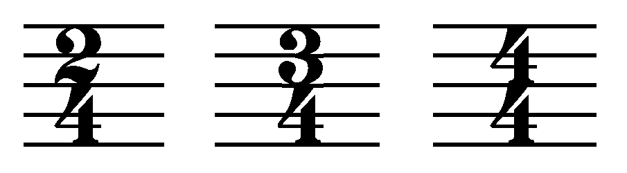

In music, usually at the beginning of the stave, you’ll see a pair of numbers, one written on top of the other, like this:
The pair of numbers is called the time signature. The time signature is there to tell you two things:
Top Number: The number of beats in each bar
The top number in the time signature tells you the number of beats to be counted off in each bar. If the top number is three, then each bar contains three beats. If it is four, then each bar contains four beats.
Bottom Number: Which note equals one beat
The bottom number in the time signature tells you which type of note value equals one beat. This is usually crotchets (quarter notes). If the bottom number is four, then a crotchet (quarter note) gets one beat. If it’s an eight, then a quaver (eighth note) gets one beat.
Here are three common examples of simple time signatures:
4/4
The most popular time signature. Mostly used in rock, jazz, country, hip-hop and dance music.
3/4
Used for waltzes and country and western ballads.
2/4
Used in polkas and marches.
